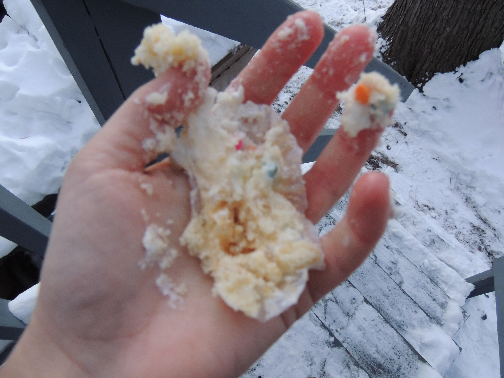

Kupcake Killer

Kupcake Kocktails
Just because I only eat cupcakes, that doesn't mean that I can't indulge in the occasional cocktail or alcoholic beverage. In fact, I will show you how to make my all-time favorite cocktail. Let's just say I put a Kupcake Killer twist on a classic. For all you underagers out there, don't worry; I have a recipe for nonalcoholic cocktails too. When you're the Kupcake Killer, it can be all fun and games. Everyone in this town is afraid of me anyways, so why can't I have a little fun with it? My roommates are pretty understanding and will join me in consuming my cocktails. Watch the video below to see how I make the perfect Kupcake Killer Kocktails.

These cocktails are perfect for when you are feelin like staying in during the chilly winter months (if you live somewhere cold like I do). They are so fun and festive and cute for the holidays! See, I do have a soft side...